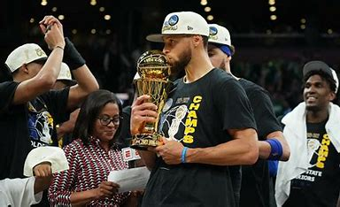

Curry's NBA Stats
| Statistic | Value |
|---|---|
| NBA Championships | 4 (2015, 2017, 2018, 2022) |
| Regular Season MVP Awards | 2 (2015, 2016) |
| Total 3-Pointers Made | Over 3,000 |
| All-Time 3-Pointers Record | NBA Leader |
| 2022 Finals MVP | FMVP |
About Stephen Curry

Stephen Curry is not just a basketball player; he is a revolutionary icon in the sports world who has transformed the game with his extraordinary shooting skills and strategic gameplay. Born in Akron, Ohio, Curry’s journey from a young enthusiast with a passion for basketball to an NBA superstar is truly inspirational. Despite facing numerous challenges and doubts about his size and skill, Curry persevered and redefined what it means to be a guard in modern basketball. His ability to hit difficult long-range shots has changed defensive strategies across the league and inspired countless young players to work on their shooting techniques.
Off the court, Curry is admired for his humility, leadership, and commitment to community service. He actively supports educational programs, youth initiatives, and charity events that help give back to the community. His story is a testament to perseverance, passion, and the power of redefining the norm. Whether you are a dedicated basketball fan or someone who appreciates stories of determination and success, Stephen Curry’s legacy offers invaluable lessons on hard work and innovation.